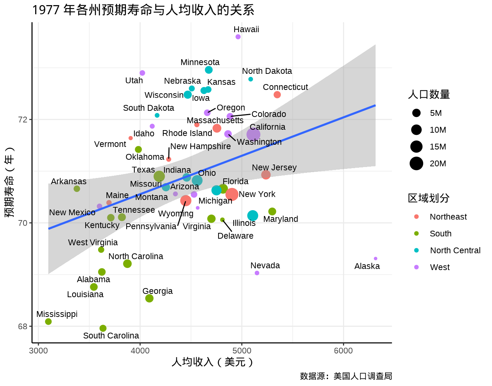

| 家庭编号 | 父亲身高 | 母亲身高 | 中亲身高 | 子女数量 | 子女编号 | 子女性别 | 子女身高 |
|---|---|---|---|---|---|---|---|
| 001 | 78.5 | 67.0 | 75.43 | 4 | 1 | male | 73.2 |
| 001 | 78.5 | 67.0 | 75.43 | 4 | 2 | female | 69.2 |
| 001 | 78.5 | 67.0 | 75.43 | 4 | 3 | female | 69.0 |
| 001 | 78.5 | 67.0 | 75.43 | 4 | 4 | female | 69.0 |
| 002 | 75.5 | 66.5 | 73.66 | 4 | 1 | male | 73.5 |
| 002 | 75.5 | 66.5 | 73.66 | 4 | 2 | male | 72.5 |
20 回归与相关分析
20.1 子代身高与亲代身高的关系
弗朗西斯·高尔顿（Francis Galton, 1822-1911）是历史上著名的优生学家、心理学家、遗传学家和统计学家，是统计学中相关和回归等一批概念的提出者，是遗传学中回归现象的发现者。1885年，高尔顿以保密和给予金钱报酬的方式，向社会征集了 205 对夫妇及其 928 个成年子女的身高数据(Galton 1886)。
目前，Michael Friendly 从原始文献中整理后，将该数据集命名为 GaltonFamilies，放在 R 包 HistData (Friendly 2021) 内，方便大家使用。篇幅所限，下 表格 20.1 展示该数据集的部分内容。
表中子女性别一栏，Male 表示男性，Female 表示女性。表中 1 号家庭父亲身高 78.5 英寸，母亲身高 67.0 英寸，育有 4 个成年子女，1 男 3 女，子女身高依次是 73.2 英寸、 69.2 英寸、 69.0 英寸 和 69.0 英寸。1 英寸相当于 2.54 厘米，78.5 英寸相当于 199.39 厘米，约等于 2 米的身高。
高尔顿提出「中亲」概念，即父母的平均身高，认为子代身高只与父母平均身高相关，而与父母身高差无关，为了消除性别给身高带来的差异，女性身高均乘以 1.08。
根据数据统计的均值和协方差，椭圆 level = 0.95
代码
library(ggplot2)
ggplot(data = GaltonFamilies, aes(x = midparentHeight, y = childHeight, color = gender)) +
geom_point(aes(fill = gender), pch = 21, color = "white",
size = 2, alpha = 0.75) +
geom_smooth(method = "lm", formula = "y~x", se = FALSE) +
stat_ellipse(type = "norm", level = 0.95, linetype = 2) +
scale_color_brewer(palette = "Set1", labels = c(male = "男", female = "女")) +
scale_fill_brewer(palette = "Set1", labels = c(male = "男", female = "女")) +
guides(fill = guide_legend(reverse = TRUE),
color = guide_legend(reverse = TRUE)) +
labs(x = "父母平均身高", y = "子女身高", fill = "性别", color = "性别") +
theme_classic()女儿的身高乘以 1.08 后，两条回归线将几乎重合。(Hanley 2004)
代码
GaltonFamilies[, height_children := childHeight * c("female" = 1.08, "male" = 1)[gender]] |>
ggplot(aes(x = midparentHeight, y = height_children, color = gender)) +
geom_smooth(method = "lm", formula = "y~x", se = FALSE) +
geom_point(size = 1.5, alpha = 0.75) +
stat_ellipse( type = "norm", linetype = 2) +
scale_color_brewer(palette = "Set1", labels = c(male = "男", female = "女")) +
guides(color = guide_legend(reverse = TRUE)) +
labs(x = "父母平均身高", y = "子女身高", color = "性别") +
theme_classic()
\[ \mathrm{height}_{children} = \alpha + \beta * \mathrm{height}_{midparent} + \epsilon \]
| 性别 | 截距 | 中亲身高 |
|---|---|---|
| male | 19.91346 | 0.7132745 |
| female | 19.80016 | 0.7136104 |
代码
data(Galton, package = "HistData")
plot(Galton,
pch = 20, panel.first = grid(), cex = 1, ann = FALSE,
xlim = c(63.5, 73.5),
ylim = c(61, 74.5),
col = densCols(Galton,
bandwidth = c(1, 1),
nbin = c(11L, 11L), colramp = hcl.colors
)
)
reg <- lm(child ~ parent, data = Galton)
abline(reg, lwd = 2)
lines(lowess(x = Galton$parent, y = Galton$child), col = "blue", lwd = 2)
library(KernSmooth)
den <- bkde2D(x = Galton, bandwidth = c(1, 1), gridsize = c(11L, 11L))
contour(den$x1, den$x2, den$fhat, nlevels = 10, add = TRUE, family = "sans")
title(xlab = "父母平均身高", ylab = "子女身高", family = "Noto Serif CJK SC")向均值回归现象最早是高尔顿在甜豌豆实验中发现的，实际上，均值回归现象在社会经济和自然界中广泛存在，比如一个人的智力水平受家族平均水平的影响。
20.2 预期寿命与人均收入的关系
生物遗传的回归现象，更确切地说是因果而不是相关，是一种近似的函数关系。与回归紧密相连的是另一个统计概念是相关，主要刻画数量指标之间的关系深浅程度，相关系数是其中一个度量。在经济、社会领域中，很多数据指标存在相关性，接下来的这个例子基于 1977 年美国人口调查局发布的统计数据，篇幅所限，下 表格 20.3 展示美国各州的部分统计数据。
| 州名 | 区域划分 | 人口数量 | 人均收入 | 预期寿命 |
|---|---|---|---|---|
| Alabama | South | 3615 | 3624 | 69.05 |
| Alaska | West | 365 | 6315 | 69.31 |
| Arizona | West | 2212 | 4530 | 70.55 |
| Arkansas | South | 2110 | 3378 | 70.66 |
| California | West | 21198 | 5114 | 71.71 |
| Colorado | West | 2541 | 4884 | 72.06 |
该数据集在 R 环境中的结构如下：
#> 'data.frame': 50 obs. of 10 variables:
#> $ Population : num 3615 365 2212 2110 21198 ...
#> $ Income : num 3624 6315 4530 3378 5114 ...
#> $ Illiteracy : num 2.1 1.5 1.8 1.9 1.1 0.7 1.1 0.9 1.3 2 ...
#> $ Life Exp : num 69 69.3 70.5 70.7 71.7 ...
#> $ Murder : num 15.1 11.3 7.8 10.1 10.3 6.8 3.1 6.2 10.7 13.9 ...
#> $ HS Grad : num 41.3 66.7 58.1 39.9 62.6 63.9 56 54.6 52.6 40.6 ...
#> $ Frost : num 20 152 15 65 20 166 139 103 11 60 ...
#> $ Area : num 50708 566432 113417 51945 156361 ...
#> $ state_name : chr "Alabama" "Alaska" "Arizona" "Arkansas" ...
#> $ state_region: Factor w/ 4 levels "Northeast","South",..: 2 4 4 2 4 4 1 2 2 2 ...它是一个 50 行 10 列的数据框，其中，state_name（州名）是字符型变量， state_region（区域划分）是因子型变量。除了这两个变量外，Population（人口数量，单位：1000），Income（人均收入，单位：美元），Life Exp（预期寿命，单位：岁）等都是数值型的变量。下 图 20.4 展示了1977 年美国各州的预期寿命和人均收入的关系，通过此图，可以初步观察出两个指标存在一些明显的正向相关性，也符合常识。
代码
library(ggplot2)
ggplot(data = state_x77, aes(x = Income, y = `Life Exp`)) +
geom_point() +
labs(
x = "人均收入（美元）", y = "预期寿命（年）",
title = "1977 年各州预期寿命与人均收入的关系",
caption = "数据源：美国人口调查局"
) +
theme_classic() +
theme(
panel.grid = element_line(colour = "gray92"),
panel.grid.major = element_line(linewidth = rel(1.0)),
panel.grid.minor = element_line(linewidth = rel(0.5))
)为了更加清楚地观察到哪些州预期寿命长，哪些州人均收入高，在 图 20.4 基础上，在散点旁边添加州名。此外，为了观察各州的地域差异，根据各州所属区域，给散点分类，最后，将各州人口数量映射给散点的大小，形成如下 图 20.5 所示的分类气泡图。
代码
library(ggplot2)
library(ggrepel)
library(scales)
ggplot(data = state_x77, aes(x = Income, y = `Life Exp`)) +
geom_point(aes(size = 1000 * Population, color = state_region)) +
geom_text_repel(aes(label = state_name), size = 3, seed = 2022) +
scale_size(labels = label_number(scale_cut = cut_short_scale())) +
labs(
x = "人均收入（美元）", y = "预期寿命（年）",
title = "1977 年各州预期寿命与人均收入的关系（分地域）",
caption = "数据源：美国人口调查局",
size = "人口数量", color = "区域划分"
) +
theme_classic() +
theme(
panel.grid = element_line(colour = "gray92"),
panel.grid.major = element_line(linewidth = rel(1.0)),
panel.grid.minor = element_line(linewidth = rel(0.5))
)整体来说，预期寿命与人均收入息息相关。
代码
ggplot(data = state_x77, aes(x = Income, y = `Life Exp`)) +
geom_point(aes(size = 1000 * Population, color = state_region)) +
geom_smooth(method = "lm", formula = "y~x") +
geom_text_repel(aes(label = state_name), size = 3, seed = 2022) +
scale_size(labels = label_number(scale_cut = cut_short_scale())) +
labs(
x = "人均收入（美元）", y = "预期寿命（年）",
title = "1977 年各州预期寿命与人均收入的关系",
caption = "数据源：美国人口调查局",
size = "人口数量", color = "区域划分"
) +
theme_classic() +
theme(
panel.grid = element_line(colour = "gray92"),
panel.grid.major = element_line(linewidth = rel(1.0)),
panel.grid.minor = element_line(linewidth = rel(0.5))
)

提示
代码
ggplot(data = state_x77, aes(x = Income, y = `Life Exp`)) +
geom_point(aes(size = 1000 * Population, color = state_region)) +
geom_smooth(method = "lm", formula = "y~x", color = "red") +
geom_smooth(data = function(x) subset(x, !state_name %in% c("Nevada", "Alaska") ), method = "lm", formula = "y~x", color = "green") +
geom_text_repel(aes(label = state_name), size = 3, seed = 2022) +
scale_size(labels = label_number(scale_cut = cut_short_scale())) +
labs(
x = "人均收入（美元）", y = "预期寿命（年）",
title = "1977 年各州预期寿命与人均收入的关系",
caption = "数据源：美国人口调查局",
size = "人口数量", color = "区域划分"
) +
theme_classic() +
theme(
panel.grid = element_line(colour = "gray92"),
panel.grid.major = element_line(linewidth = rel(1.0)),
panel.grid.minor = element_line(linewidth = rel(0.5))
)#>
#> Call:
#> lm(formula = `Life Exp` ~ Income, data = state_x77)
#>
#> Residuals:
#> Min 1Q Median 3Q Max
#> -2.96547 -0.76381 -0.03428 0.92876 2.32951
#>
#> Coefficients:
#> Estimate Std. Error t value Pr(>|t|)
#> (Intercept) 6.758e+01 1.328e+00 50.906 <2e-16 ***
#> Income 7.433e-04 2.965e-04 2.507 0.0156 *
#> ---
#> Signif. codes: 0 '***' 0.001 '**' 0.01 '*' 0.05 '.' 0.1 ' ' 1
#>
#> Residual standard error: 1.275 on 48 degrees of freedom
#> Multiple R-squared: 0.1158, Adjusted R-squared: 0.09735
#> F-statistic: 6.285 on 1 and 48 DF, p-value: 0.01562输出结果中各个量的计算公式及 R 语言实现，比如方差 Variance、偏差 Deviance/Bias、残差 Residual Error
20.3 分析影响入院等待时间的因素
医院的床位是非常重要的资源。
#> 'data.frame': 2625 obs. of 11 variables:
#> $ 等待时间 : num 1 1.2 20 6 8.9 2.9 7.9 2.8 2.7 5 ...
#> $ 门诊次 : int 2 7 43 1 3 1 10 3 6 2 ...
#> $ 住院次 : int 1 1 1 1 1 1 1 1 1 1 ...
#> $ 开住院条日期: int 3 3 3 3 3 3 3 3 3 3 ...
#> $ 性别 : int 0 0 1 1 1 1 0 1 1 1 ...
#> $ 年龄 : int 42 32 59 9 45 73 50 25 14 20 ...
#> $ 入院疾病分类: int 3 1 1 3 3 3 4 1 2 3 ...
#> $ 入院目的 : int 1 1 1 1 1 1 1 1 1 1 ...
#> $ 住院类别 : int 2 2 2 2 2 2 2 2 2 2 ...
#> $ 入院病情 : int 1 1 1 1 1 1 1 1 1 1 ...
#> $ 医生 : int 2 2 2 2 2 4 2 2 4 4 ...20.4 习题
- R 软件内置的数据集
esoph是一份关于法国伊勒-维莱讷地区食道癌的数据，请读者根据这份数据研究年龄组、烟草消费量、酒精消费量（每日喝酒量）和患食道癌的关系。